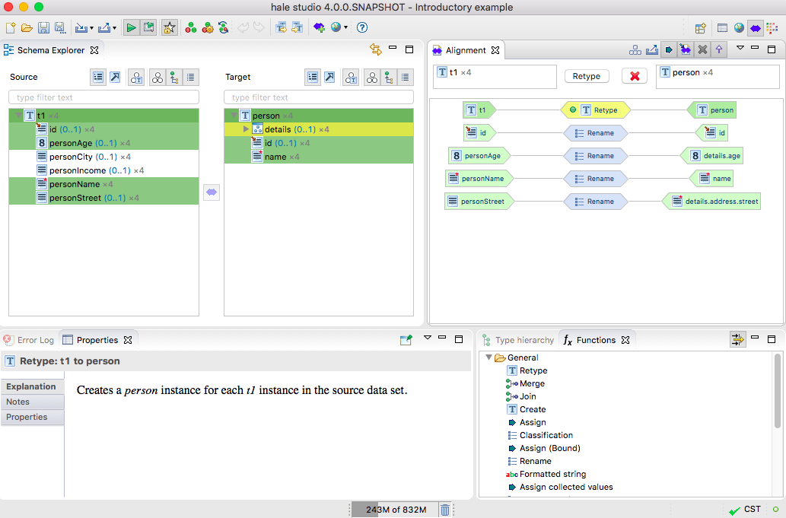

Default perspective
The default perspective serves to explore the source and target
schemas, to define relations between the schema elements and to view
and manage the overall alignment.

Following is a short description of the perspective's views:
- The Schema Explorer allows you to view the structure
of the source (left) and the target (right) schema in various ways
and enables the definition of mappings between the elements of the
schemas.
- The Alignment view displays the current alignment per
type relation and allows editing or removing mapping cells.
- The Properties view displays information on the
current selection, in the above image this is the explanation of the
mapping cell selected in the active Alignment view.
- The Functions view shows the available transformation
functions, which can be used to define relations. Further information
on a selected function will be displayed in the Properties
view.
- The Type hierarchy view allows to explore the
hierarchy of a schema type, associated with the current selection in
the Schema Explorer.
- The Report List provides an overview of the last
completed processes, e.g. loading a schema or performing a
transformation, and their status.
- The Error Log gives you insight into the application's
log messages. They can be exported as log files to submit with a bug
report.